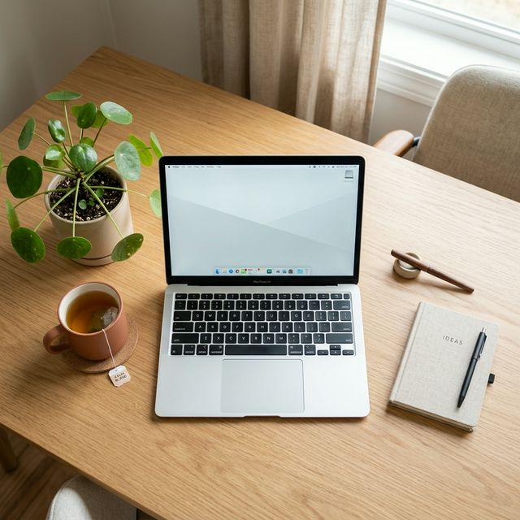

Creating a Calm Workspace

Your external environment is often a direct reflection of your internal state. Here is how to redesign your desk for ultimate mental peace.
In the digital age, the line between "work" and "rest" has become dangerously thin. For those of us working from home, the desk can quickly become a dumping ground for paperwork, coffee mugs, and digital clutter. This environmental static doesn't just look bad; it creates a background level of stress that hinders creativity and focus. Study after study shows that a clean workspace can lead to increased productivity and a more regulated nervous system.
The Power of Essentialism
A calm workspace isn't about being perfectly empty. It's about being intentional. Every item on your desk should have a defined purpose—either functional (your mouse and laptop) or inspirational (a meaningful photo or a small plant). If an item doesn't fit into these categories, it's categorized as clutter and should be moved.
"Clear surface, clear mind. The simple act of clearing your physical horizon allows your cognitive focus to narrow and deepen."
The 5 Steps to Workspace Zen
Start with these five simple shifts to transform your environment today:
- The One-Touch Rule: If you pick up a piece of mail or a document, decide its fate immediately. Don't set it back down in a 'later' pile.
- Visual Quiet: Use cord management tools to hide the sensory noise of tangled wires.
- Nature's Anchor: Bring one small natural element to your desk—a stone, a small succulent, or just a view of the outdoors.
- The End-of-Day Reset: Take 3 minutes at the end of every work session to return your desk to its "Calm Default" state.
- Proper Lighting: Move away from harsh overhead LEDs and use a soft, warm salt lamp or a targeted desk lamp to create focus zones.
By intentionally curating your work sanctuary, you aren't just tidying a desk; you're building a foundation for emotional regulation during your most stressful hours.